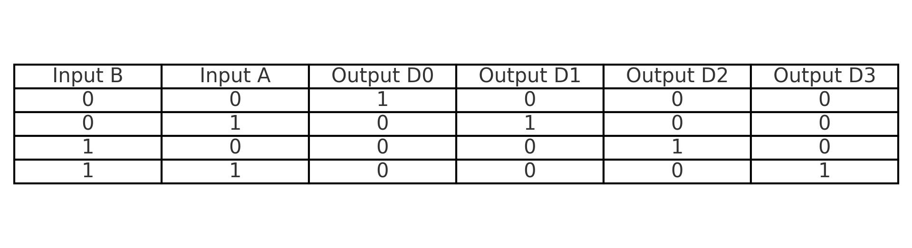
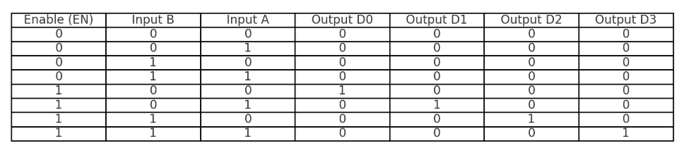
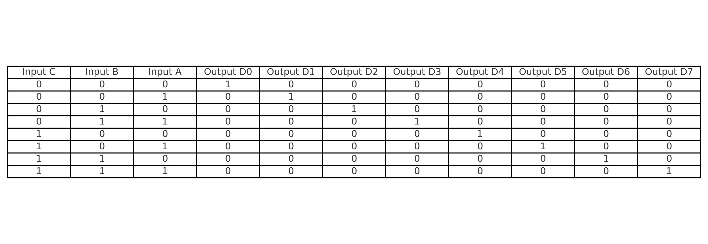
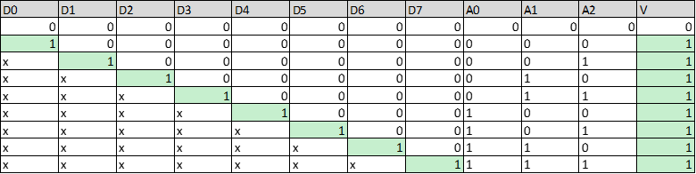
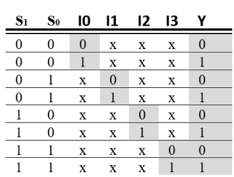
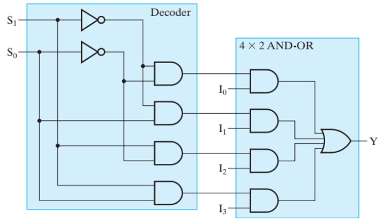
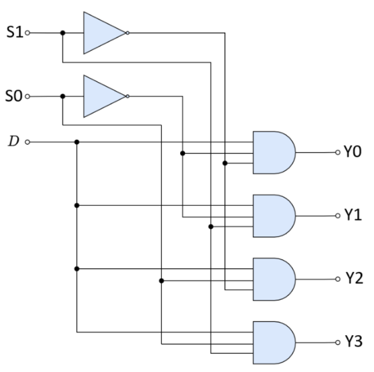

Combinational Functional Blocks
Mạch Tư Duy Chức Năng
Mạch tư duy tổ hợp là loại mạch điện tử trong đó đầu ra của mạch là một hàm tư duy trực
tiếp của các đầu vào tại cùng thời điểm.
Đặc điểm chính của mạch tư duy tổng hợp:
- Được xây dựng từ các mạch tư duy cơ bản như: AND, OR, NOT, NAND, NOR, XOR, XNOR
- Đầu ra thay đổi ngay lập tức khi đầu vào thay đổi
- Không có bộ nhớ (memoryless)
Combinational Functional Blocks- Mạch Tư Duy Chức Năng
Mạch chức năng được tạo nên từ mạch tư duy tổ hợp thông dụng gồm:
- Các bộ giải mã (decoder)
- Các bộ mã hóa (encoder)
- Bộ chọn hay bộ điều kênh (multiplexer)
- Bộ phân tách hay bộ phân kênh (demultiplexer)
- Các mạch tính toán số học như bộ cộng, bộ trừ
Decoder Circuits
Mạch giải mã (Decoder) là một loại mạch điện tử có chức năng chuyển đổi tín hiệu số đầu vào nhị phân (0: 00,
1: 01, 2: 10, 3: 11) thành một
dạng tín hiệu đầu ra riêng biệt (1000, 0100, 0010, 0001). Thông thường, mạch giải mã nhận vào n bit dữ liệu
và kích hoạt đúng một
trong số 2^n đầu ra dựa trên tổ hợp giá trị của các bit đầu vào.
Mạch giải mã thường được sử dụng trong các ứng dụng như:
- Lựa chọn đường truyền trong bộ nhớ (memory addressing)
- Điều các thiết bị hiển thị (như LED, màn hình)
Một số loại mạch giải mã phổ biến bao gồm:
- Mạch giải mã 2-ra-4 (2-to-4 decoder)
- Mạch giải mã 3-ra-8 (3-to-8 decoder)
- Mạch giải mã 4-ra-16 (4-to-16 decoder)
Thông thường, mạch giải mã có thể có thêm chân Enable để bật hoặc tắt toàn bộ chức năng giải mã theo
yêu cầu.
2-to-4 Line Decoder (No Enable)

2-to-4 Line Decoder (With Enable)

3-to-8 Line Decoder (No Enable)

3-to-8 Line Decoder (With Enable)
Encoder Circuits
Mạch mã hóa (Encoder) là một mạch điện tử có chức năng trái ngược với mạch giải mã (Decoder). Nó được dùng để
mã hóa các tính hiệu đầu vào thành tính hiệu số nhị
phân đầu ra.Thông thường, một mạch mã hóa có 2n đầu vào và n đầu ra. Ví dụ, một mạch mã hóa 8-3
sẽ có 8 tín hiệu đầu vào và 3 tín hiệu đầu ra, biểu diễn mã nhị phân của đầu vào đang được kích hoạt.
Tuy nhiên, trong thực tế, có thể xảy ra trường hợp nhiều đầu vào cùng được kích hoạt cùng lúc. Để xử lý vấn
đề này, người ta thiết kế mạch mã hóa ưu tiên (Priority Encoder). Trong mạch mã hóa ưu tiên, nếu có
nhiều
đầu vào đồng thời ở mức "1", mạch sẽ tự động ưu tiên tín hiệu đầu vào có thứ tự cao hơn
Ngoài ra, nhiều mạch mã hóa còn bổ sung một đầu ra đặc biệt gọi là chân Validity (V), hay còn gọi là
chân hợp
lệ. Chân này có nhiệm vụ báo hiệu rằng có ít nhất một đầu vào đang được kích hoạt. Nếu tất cả các đầu vào
đều ở mức "0", chân V sẽ ở mức "0" để báo rằng không có đầu vào hợp lệ; ngược lại, nếu có đầu vào được kích
hoạt, chân V sẽ ở mức "1".
Ứng dụng của mạch mã hóa:
- Bàn phím số: Khi một phím được nhấn, mạch mã hóa sẽ chuyển tín hiệu từ phím đó thành mã nhị phân
gửi cho bộ xử lý.
- Xử lý tính hiệu cảm biến: Trong các hệ thống cảm biến, mạch mã hóa được sử dụng để đọc vị trí,
tốc độ hoặc các trạng thái khác.
- Thiết kế hệ thống giao tiếp số: Giảm số lượng dây dẫn cần thiết khi truyền tải nhiều tín hiệu.
8-to-3 Priority Encoder (with Valid Output)

Multiplexer Circuits
Bộ chọn hay bộ điều kênh (Multiplexer - viết tắt là MUX) là một loại mạch có chức năng chọn một trong nhiều
tín hiệu đầu vào để truyền ra một đầu ra duy nhất. Mục tiêu của bộ chọn là gộp nhiều nguồn dữ liệu vào một
đường truyền chung, từ đó giúp tiết kiệm số lượng dây dẫn và tối ưu hóa hệ thống mạch.
Một bộ chọn thông thường có:
- 2n đầu vào dữ liệu (data inputs),
- n đầu vào chọn (select inputs) để xác định đầu vào nào sẽ được kết nối tới đầu ra,
- và 1 đầu ra duy nhất (output).
Ví dụ: Một bộ chọn 4-1 có 4 đầu vào dữ liệu (D0, D1, D2, D3), 2 đầu vào chọn (S1, S0), và 1 đầu ra (Y). Các
đầu vào chọn S1, S0 sẽ quyết định tín hiệu từ đầu vào nào sẽ xuất hiện tại đầu ra, D0 hoặc D1 hoặc D2 hoặc
D3.
4-to-1 Multiplexer

4-to-1 Multiplexer Logic Diagram

Demultiplexer Circuits
Bộ phân tách hay bộ phân kênh (Demultiplexer - viết tắt là DEMUX) là một loại mạch tổ hợp trong điện tử số,
có chức năng nhận
một tín hiệu đầu vào và phân phối tín hiệu đó tới một trong nhiều đầu ra. Bộ phân kênh thực hiện quá trình
ngược lại so với bộ chọn (Multiplexer).
Một bộ phân kênh thông thường có:
- 1 đầu vào dữ liệu (Data Input),
- n đầu vào chọn (Select Inputs) để quyết định tín hiệu sẽ được gửi đến đầu ra nào,
- và 2n đầu ra (Outputs).
Ví dụ: Một bộ phân kênh 1-4 có 1 đầu vào dữ liệu (D), 2 đầu vào chọn (S1, S0), và 4 đầu ra (Y0, Y1, Y2, Y3).
Các tín hiệu tại đầu vào chọn S1 và S0 sẽ xác định đầu ra nào nhận dữ liệu từ đầu vào, D0 hoặc D1 hoặc D2
hoặc
D3.
1-to-4 Demultiplexer
1-to-4 Demultiplexer Logic Diagram
